Profil Singkat
Ruteng adalah sebuah Kecamatan yang juga merupakan ibu
kota dari Kabupaten Manggarai, di provinsi Nusa Tenggara
Timur, Indonesia. Ruteng juga dikenal sebagai salah satu
daerah yang memiliki suhu terdingin di Indonesia. Jalur
udara terhubung melalui Bandara Frans Sales Lega atau
Bandara Ruteng. Penduduknya sebagian besar beragama
Katolik.
Kota Ruteng juga dikenal dengan sebuah julukan yakni
"Kota Seribu Biara/Kota Seribu Gereja". Disini,
masyarakat masih melestarikan adat Manggarai kuno yang
disebut "caci" (adu cambuk), dan juga merupakan salah
satu daya tarik wisata di wilayah ini. Jumlah penduduk
Ruteng tahun 2021 sebanyak 44.020 jiwa, dengan kepadatan
penduduk 606 jiwa/km².
Demografi
Suku asli Kabupaten Manggarai adalah orang Manggarai,
dengan menggunakan bahasa Manggarai. Pendatang dari
kawasan Nusa Tenggara Timur dan luar provinsi juga ada
di Ruteng. Sementara itu, agama yang dianut hampir
semuanya menganut agama Katolik. Berdasarkan data
Kementerian Dalam Negeri tahun 2021, adapun persentasi
penduduk Ruteng menurut agama yang dianut ialah
Kekristenan yakni 99,84%, dengan dominan Katolik
sebanyak 99,56% dan selebihnya Protestan sebanyak 0,28%.
Yang memeluk agama Islam sebanyak 0,13%, dan Hindu serta
Buddha sebanyak 0,02%.
Kota Seribu Gereja
Ruteng memiliki banyak sekali gereja Katolik yang
tersebar di berbagai sudut kotanya. Ada Gereja Santo
Mikhael Kumba, Gereja Katolik Kristus Raja Mbaumuku,
Gereja Santo Fransiskus Assisi Karot, dan masih banyak
lagi lainnya. Karena itulah Ruteng dijuluki "Kota Seribu
Gereja". Banyaknya gereja di Ruteng tak lepas dari
sejarahnya. Selain riwayat penjajahan Portugis yang
pernah menguasai daerah ini, Ruteng juga dikembangkan
oleh para misionaris gereja pada masa Politik Etis
Belanda di awal tahun 1900-an, yang bertujuan
meningkatkan kesejahteraan rakyat Hindia
Belanda—Indonesia kala itu.
Yuk kita lihat satu per satu kemegahan dan keindahan
dari gereja yang ada di Kota Ruteng!
Gereja St. Vitalis Cewonikit


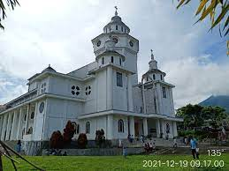
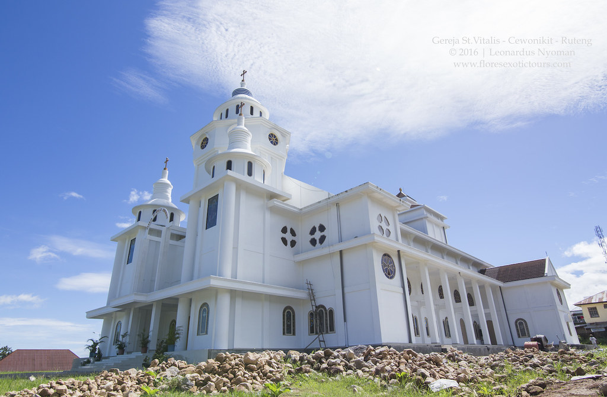
❮
❯
Gereja St. Mikhael
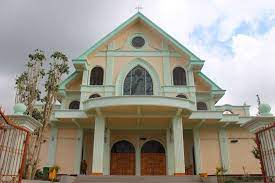
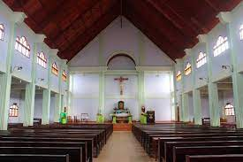
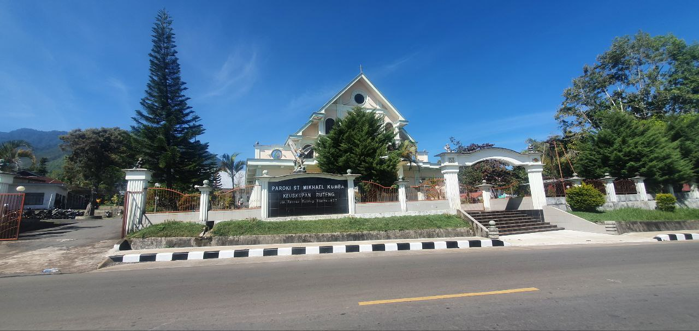
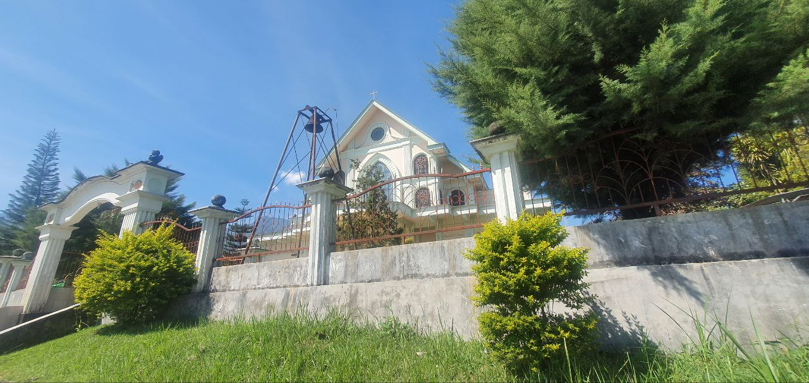
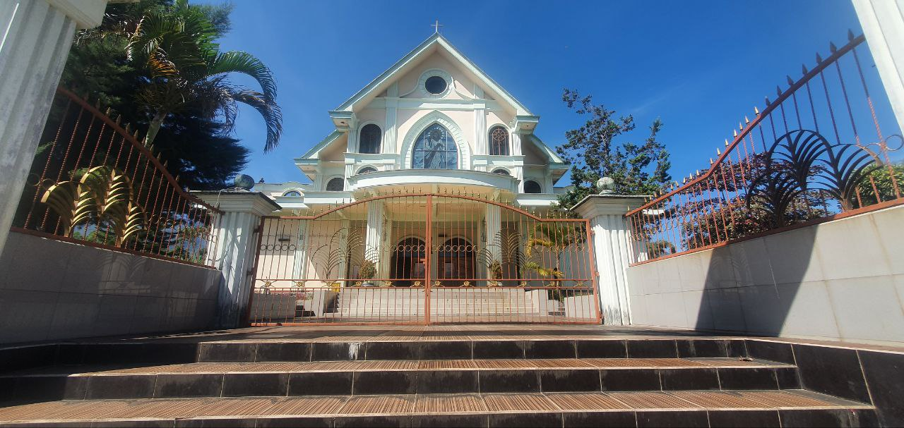
❮
❯
Gereja St. Fransiskus Asisi
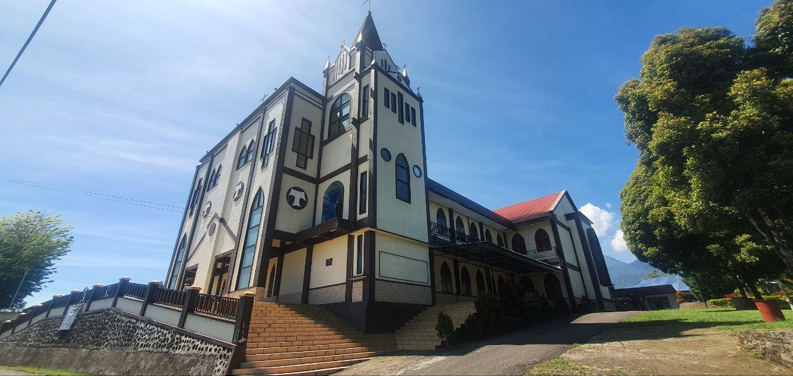
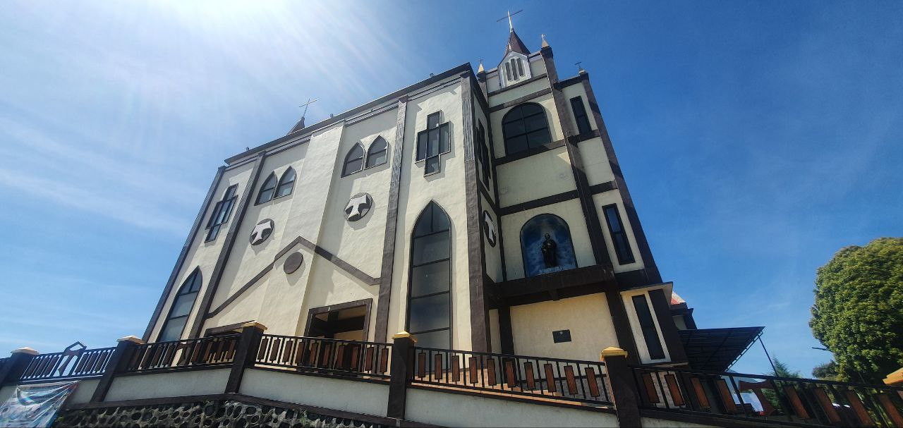
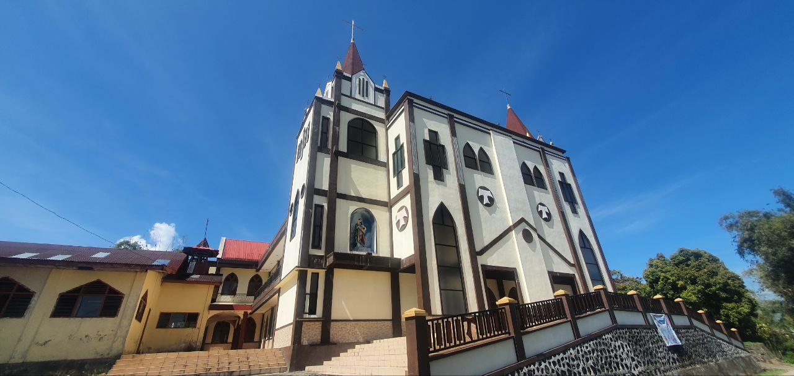
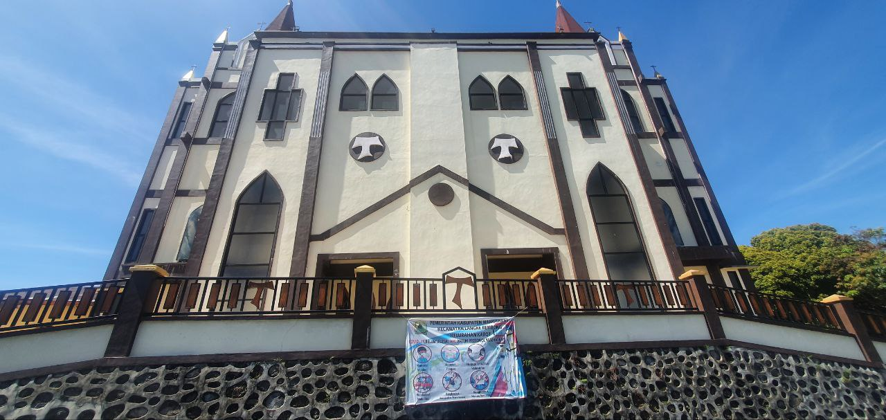
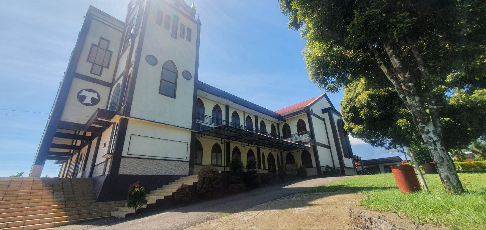
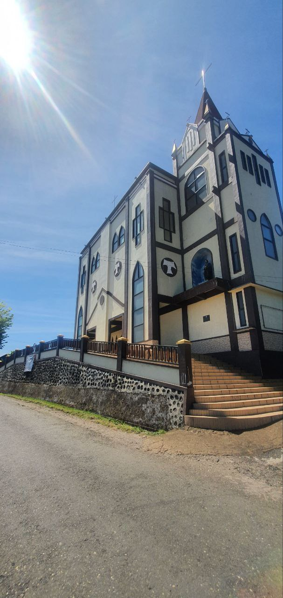
❮
❯
Gimana? Keren bukan? Keempat gambar di atas merupakan
foto terjelas untuk gereja-gereja yang ada di kota
Ruteng. Selain keempat gereja yang terlihat di atas,
tercatat ada 8 gereja Katolik yang tersebar di seluruh
wilayah kota kecil ini. Karena kotanya yang kecil dan
memiliki jumlah gereja yang banyak, sehingga orang-orang
menyebut Ruteng ini sebagai "Kota Seribu Gereja".